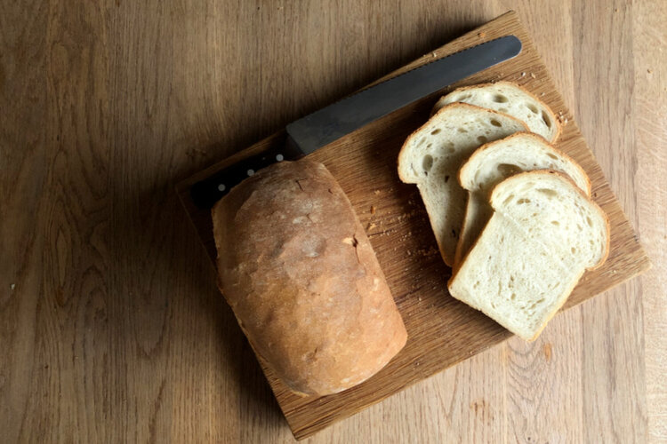

Homemade Bread

Description
This simple loaf of white bread is soft, delicious and easy to make.
This recipe will make two loaves using 2lb loaf tins.
Recipe Notes
- For whole wheat variation use 950g flour and 50g wheat bran.
- 640g water gives a sticky dough that can be difficult for beginner bread-makers to knead. 600g water gives a dough that is much easier to work with but still makes a deliciously moist, soft loaf.
Ingredients
- 600-640g Room temperature water
- 24g Fresh yeast or 14g dry yeast
- 1000g Strong white bread flour
- 16g Salt
- 30g Olive oil
Steps
Making the Dough
- In a large mixing bowl weigh your yeast, add water and mix together until the yeast is dissolved.
- Next add the flour, salt and olive oil.
- Mix everything with your dough scraper until it comes together into a rough dough and then turn it out unto a clean table.
- Knead your dough well for 8 minutes without dusting with any flour. Then, shape it into a ball and place it back into the bowl. Sprinkle the top with a little flour, cover with a clean cloth and rest at room temperature for 1 hour.
Dividing and Pre-shaping
- Dust the top of your dough and use your dough scraper to turn it out unto the table. Make the sure the dough comes out of the bowl upside down, sticky side up.
- Use your fingertips lightly to flatten the dough and cut into two equal size half-moon pieces with your dough scraper. Fold each piece into a ball by pinching an edge with finger and thumb and folding it over the dough almost to the other side. Keep turning and folding the soufh, working your way around until you end up with a bouncy ball of dough. All the seams and joins should end up on one side, and the underside of should be smooth and tight. Roll it over bringing the smooth side to the top and cup your hands underneath the dough slightly to tighten it up. Dust lightly with flour and rest your two dough balls next to each other on the table under a proving cloth for 15 minutes.
- While you're waiting, lightly grease two loaf tins with oil or butter.
Shaping
- Remove the cloth from the top of your dough.The dough balls should have relaxed and spread slightly.
- Slide your dough scraper underneath to unstick a dough ball from the table and flip it upside down onto a lightly dusted surface.
- Press once again with fingertips and knuckles to push the dough flat into a circle. Slide your fingers, palms up, underneath each side of the dough. Grip the dough and pull to stretch the dough sideways. At an angle fold one side two thirds of the way over the dough and the other side the same so that it ends up overlapping the first fold and you have a kind of capitol A shape. Then roll the dough from the pointy edge towards you into a tight sausage. Squeeze up the seam to stick together.
- Drop your loaf into its tin seam side down and repeat for the second loaf.
Second Rest
- Cover up your loaves with your cloth again, and rest for 1 hour. While the loaves rest, preheat your oven to 200°C Fan/392°F/Gas Mark 7 with a deep tray on the bottom shelf. Fill half a kettle of water ready to go for later if you are baking with steam.
- When your loaf has clearly risen and is slightly delicate to the touch get ready to bake.
Baking
- When you are ready to bake your loaves, boil the kettle.
- Gently place both your loaves on the oven shelf and pour the hot water into the tray beneath (be careful!) and close the oven door.
- Bake your loaves for 40 minutes. I bake mine start to finish without checking because I know my oven really well, but if this is your first loaf set a timer for 30 minutes and take a look. If the loaves look like they are taking on too much colour, turn the oven down to 180°C Fan/356°F/ Gas Mark 5 to finish off for the final ten minutes.
- When they are done pop them out of the tin and feel the underside. If they are soft and steamy underneath, return them to the oven without the tin for a further 5-10 minutes.
- Allow to cool completely on a wire rack.